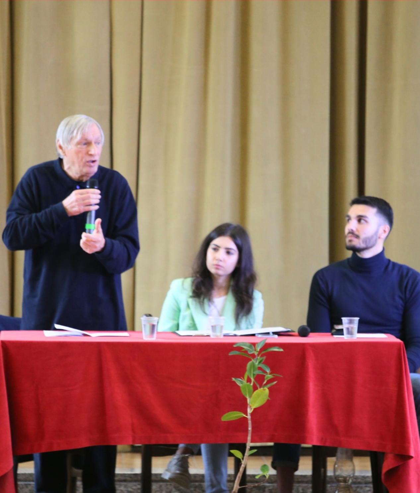

| HOME |
| SVILUPPO COMPETENZE |
| CAPOLAVORO |
| EDUCAZIONE CIVICA |
Nel mio percorso scolastico ho consolidato diverse conoscenze e competenze legate alla cittadinanza attiva. Nei primi due anni del biennio ho studiato diritto, che mi ha permesso di comprendere meglio la struttura dello Stato, i principi fondamentali della Costituzione e il significato dei diritti e dei doveri di ogni cittadino. Questo studio mi ha dato una base utile per affrontare con maggiore consapevolezza i temi dell’educazione civica. Durante l’anno ho svolto anche una breve attività dedicata alla pena di morte, che mi ha fatto riflettere sul valore della vita, sul rispetto della dignità umana e sulle differenze tra i vari sistemi giuridici nel mondo. È stata un’occasione per sviluppare senso critico e comprendere come le scelte degli Stati influiscano sui diritti fondamentali delle persone. Ho inoltre partecipato a un incontro all’interno del progetto “Un albero per il futuro”. Questo momento mi ha aiutato a riflettere sull’importanza della memoria, della legalità e dell’impegno civile. Il progetto, legato anche al tema dell’ambiente, mi ha fatto capire quanto ciascuno possa contribuire, anche con piccoli gesti, alla costruzione di una società più giusta e responsabile. In generale, l’educazione civica mi ha guidato a essere più attento alle regole, al rispetto degli altri, al comportamento online e alla tutela dell’ambiente. Mi ha aiutato a maturare una maggiore consapevolezza del mio ruolo nella comunità scolastica e nella società, e a capire quanto sia importante partecipare in modo attivo e responsabile.
